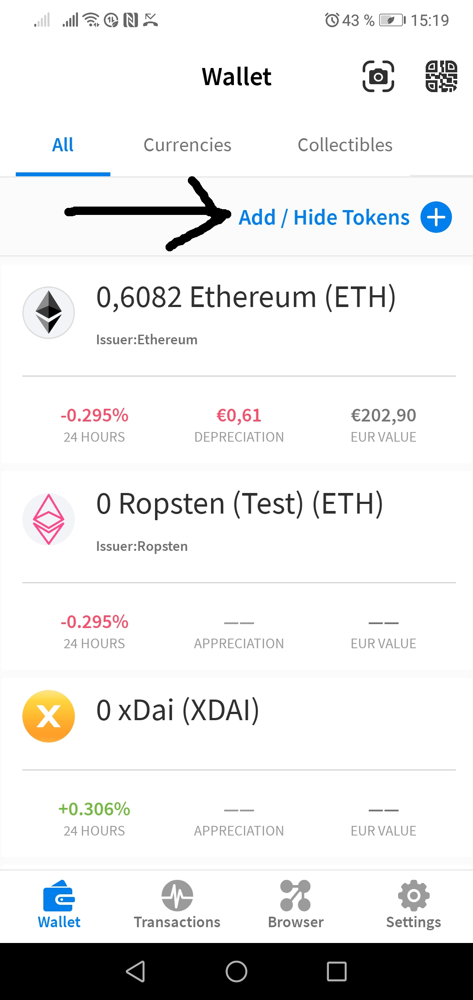
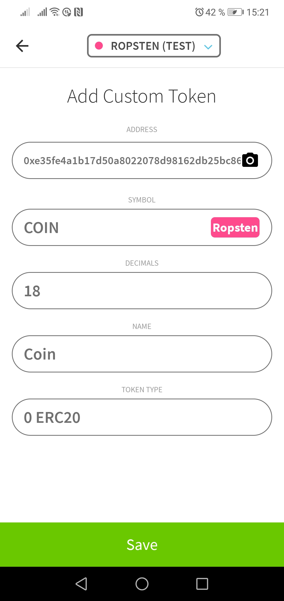
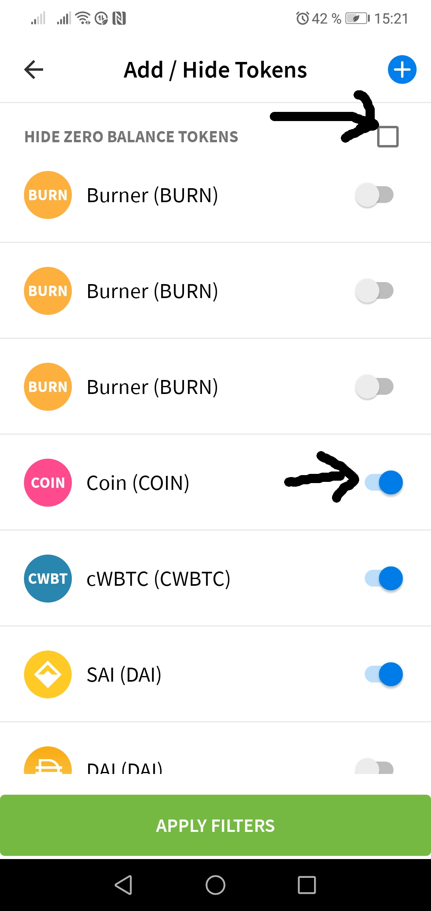

Miniguide: Add a Ropsten token to AlphaWallet
This guide explains how to add a token on Ropsten testnet to AlphaWallet.
AlphaWallet is a wallet for Ethereum. It allows to manage any token on the Ethereum main chain as well as on Ropsten test net and xDai sidechain. This guide explains how to add any token to your wallet.
Tap "Add / Hide Tokens" on the start page of AlphaWallet.

Tap the Plus Symbol

Enter network and token contract address

In this screen, you have to select the network the token runs on - in this demo it is the Ropsten test net - and insert the contract address of the token. Usually AlphaWallet will fill the other form elements as it is able to detect the token properties.
Activate token and show zero balance token

After saving the new token, you need to deactivate the "hide zero balance tokens" checkbox and switch on the new token - in this example called Coin.
Watch the new token on the start page of AlphaWallet

As you see, when you return to the front page of AlphaWallet, it now knows about the token you specified.